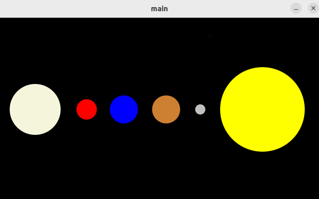

Review da XXVII OBA
Olá, leitores! Nesse artigo irei dar minha opinião na XXVII OBA, que ocorreu em 2024. Já faz um bom tempo que ela aconteceu, mas prefiri esperar saber se ganhei uma medalha antes de fazer esse artigo, para assim provar que tenho credibilidade no assunto. Clique aqui para ver a prova de que fui medalhista nessa prova.